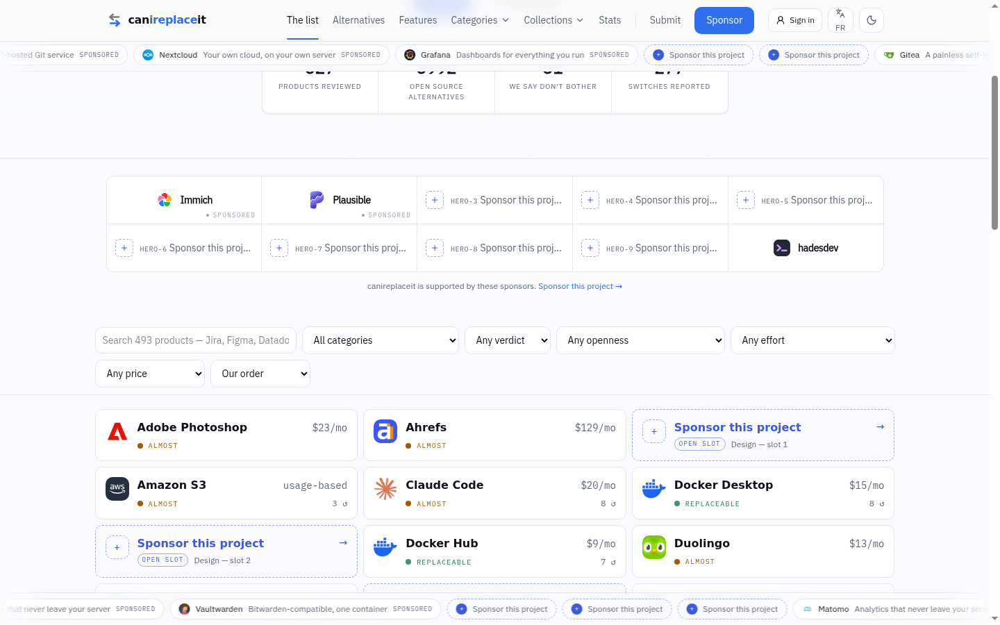
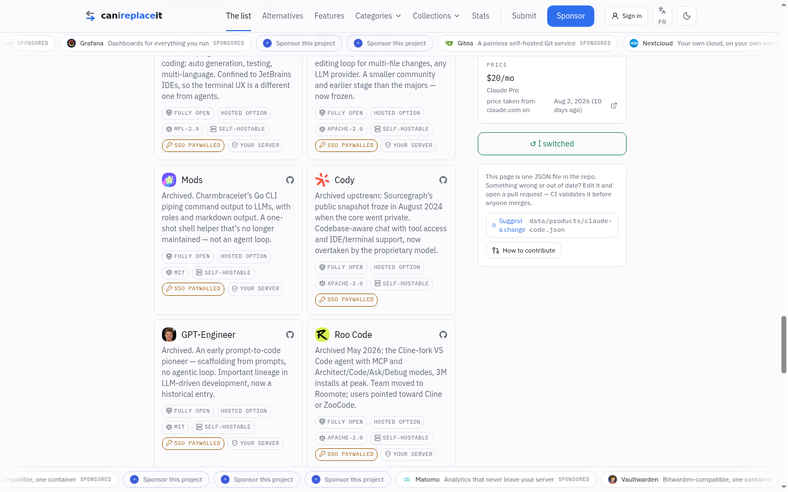
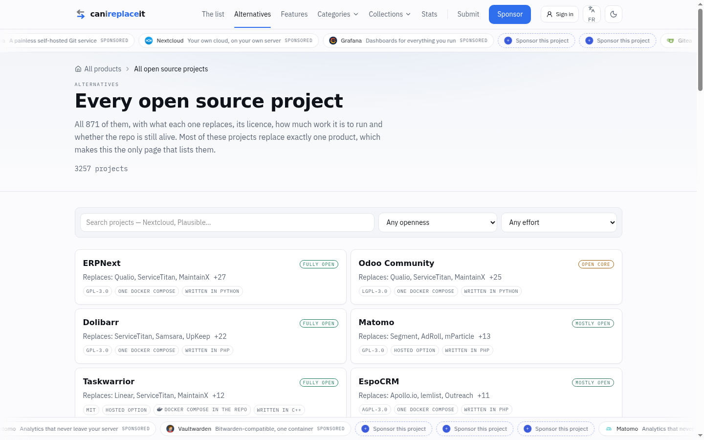
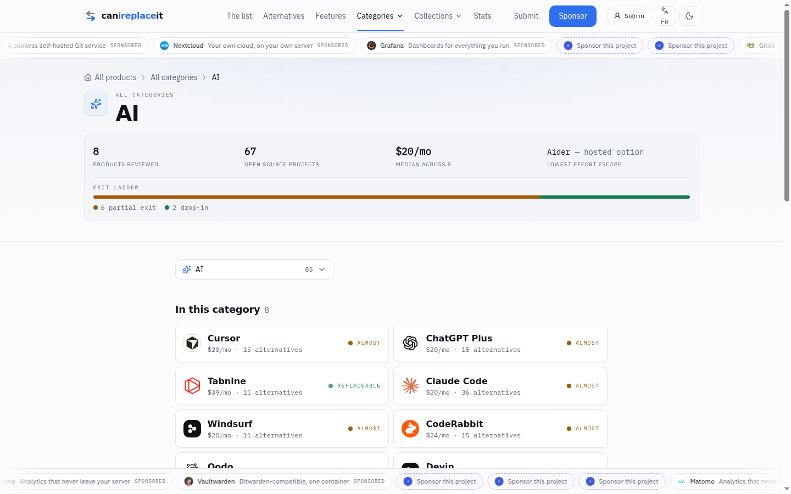
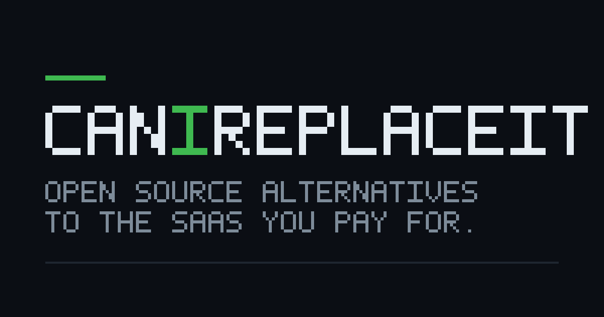
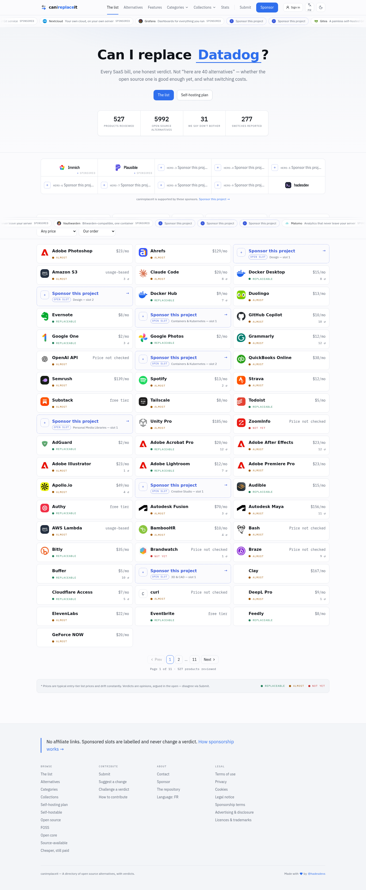

Written after walking the running app at 1440 px — home, product, category, collections, projects index, features. Every claim below is a number I pulled out of data/ or a thing I saw on screen, not a guess. Pick yes / no / maybe per proposal; the bar at the bottom copies your answers back to me.
Screenshots in plan/shots/ · catalogue state: 527 products · 85 categories · 5992 OSS + 238 cheaper alternatives · 3229 unique projects · 10 category groups
Four root causes explain almost every ugly thing on the site. The proposals after this are just consequences.
| # | Root cause | Evidence | Shows up as |
|---|---|---|---|
| R1 | Badges that are true for everyone | 5982 / 5992 alternatives are selfHostable:true |
Every card wears the same six pills. Six pills that never vary are decoration, not information — so the reader learns nothing and the wall looks identical top to bottom. |
| R2 | The feature vocabulary is SaaS-shaped | 137 features, median 8 answered per project |
The compare table asks a terminal CLI whether it does "OAuth2 social login" and "Roles and permissions". For Claude Code it prints a row reading Has AI features: ● ● ● ●. That is the "comparing products that make no sense" you flagged. |
| R3 | No ranking, no grouping | 36 alternatives in one flat grid |
A live drop-in (opencode) and a repo that has been archived since 2024 (Mods, Cody, GPT-Engineer, Roo Code) sit in identical boxes. Only the prose says which is dead. |
| R4 | Two-thirds of projects have no enrichment | 1047 / 3229 have health data |
Language, last commit, docker-compose, archived flag exist for 32% of projects. Every dense display idea degrades to blanks for the 2182 added this session. See §11. |

<select> boxes, wrapping onto two rows, sticky under the header so they follow you down 48 rows. Below 1024 px this is already replaced by a single Filters button and a sheet — which is the good version, and desktop doesn't get it.The code is App.tsx:1253 (lg:hidden → sheet) and App.tsx:1285 (hidden lg:flex → six selects). The sheet already exists, is already translated, already has pill groups and a searchable category picker. Desktop is the only place it isn't used.
Delete the lg:flex six-select bar. The trigger row becomes: search · verdict pills · Filters (2) button · active-filter chips. The sheet stays a bottom sheet on phones and becomes a centred modal (or right drawer) on desktop, where there's room for all five groups without scrolling.
The chips row is the part that's missing today: with six selects you cannot see what you've narrowed to without reading all six. With chips, one glance and one click to undo each.
Same as F1 but "Our order / Most switched / Price / Name" stays as one visible control on the right. Sort isn't a filter and people re-sort more often than they re-filter.
The classic e-commerce column. Costs 260 px of a page that's already a 3-column grid, drops it to 2 columns, and puts the controls out of reach on the pages that matter (category, collection) where they'd have to be repeated.
Today filters are React state with no query string, deliberately — the comment at browse.tsx:1 says it's to stop the combinatorial filter space minting indexable pages. That's the right SEO call, but it means you cannot send anyone a filtered view. Middle path: write ?verdict=yes&effort=docker to the URL, keep every parameterised URL noindex, canonical to the bare path. Shareable, still not crawlable.
Here is what the product page prints today for Claude Code, verbatim:
Five problems in five rows:
decidedCount, ReplaceMatrix.tsx:68), not by which alternatives are any good. opencode is the answer to this page and it isn't in the table.Compare on what we know for everyone: licence (100%), effort (100%), open-core (100%), data residency (100%), plus language / last commit / docker-compose from health. One dense row per alternative, sortable, all 36 of them — not 4.
Every column here is discriminating — no two rows are identical, which is the exact opposite of the six-pill badge soup. Sort by any column.
"Does it do SAML" is a great question for Notion, Airtable, Zoom, GitLab. It is a category error for shell-terminal, ai, 3d-cad, scientific-computing. Gate the matrix on the category group: render it for work / growth / commerce / operations, render the C1 spec strip for dev / creative / home, and let infra / ai-data get both.
differingOnly today counts a row as differing if any two columns differ — so "Has AI features ● ● ● ●" survives because the vendor's cell says "€ Pro". Tighten it: a row earns its place only if the alternatives disagree with each other, or the vendor charges for something every alternative gives away. The second case is the whole argument of the site; the first is a genuine choice. Everything else is noise.
The taxonomy file already annotates auth.sso.saml with "The one most often paywalled. This is the SSO tax." Turn that into the headline block on SaaS product pages: the handful of features the vendor gates behind a plan that at least one open alternative ships in the free build. Small, brutal, and the most quotable thing the site could publish.
One-line change to ReplaceMatrix.tsx:68: order candidate columns by exit quality (effort, then openness) with decided-count only as a tie-break. Stop showing a column that's four dashes wide. Subsumed by C7 if you take that — this is the cheap version if you don't.
/en/compare/opencode-vs-crush — two projects side by side, every axis, generated for pairs that share a product. Real SEO surface ("X vs Y" is the highest-intent query in this space) but it mints a lot of URLs and the data is thin for most pairs. C7 gets you most of this value with none of the URL sprawl — I'd do C7 first and only revisit this after §11.
Two things you were right about, and one you'll like:
1. The page already exists. /en/alternatives/claude-code is the "alternatives of Claude Code" page — the route segment is literally alternatives, and its title already reads "36 open source Claude Code alternatives (2026)". Nothing to build. The work is in getting people there, which is D1 (cards should say "36 escapes") and L1 (link the names inward).
2. The swap mechanic already exists too — on the wrong page. FeaturesPage.tsx holds a picked: string[], a toggle to add or drop a column, a ?cmp=a,b,c query param, and compare() over the picked keys. It's a working column picker. It just starts empty and says "pick two" on a page nobody lands on. Meanwhile the product page renders a fixed 4 columns chosen by decidedCount with no way to change them.
So: pre-seed picked with 5 on the product page, keep the picker, done. Same component, different initial state.
3. The bit you'll like: splitting the table into facts and features resolves the whole §2 problem. Facts (licence, effort, open-core, residency, language, last commit) are 100% populated and always discriminate — that block never renders a blank. Features are 32% populated and category-dependent — that block renders only the rows someone actually answered, and disappears entirely for a category where the vocabulary doesn't apply (C2). You get a table that's always useful and never asks a terminal CLI about SAML.
| Decision | Recommendation |
|---|---|
| Which 5 are picked by default? | The computed score from W7 — effort, then openness, then still-alive, then switch votes. Not decidedCount, which is what picks them today and is why opencode — the actual answer to that page — isn't in the current table. |
| Swap mechanic | ✕ on a column header to drop it; click any alternative below to add. Cap at 5 (6 columns with the vendor); adding a 6th drops the weakest, or just disable until one is removed. |
| URL | ?cmp=opencode,crush,goose — the convention FeaturesPage already uses. Makes a comparison shareable, which is the thing people actually link. Keep parameterised states noindex, canonical to the bare path — same rule as §1 F4. |
| Narrow screens | Sticky first column, horizontal scroll. Six columns will not fit on a phone and shouldn't try. |

A badge earns its place only if it's false for a meaningful share of the list. Measured across all 5992 alternatives:
| Badge | True for | Verdict |
|---|---|---|
| SELF-HOSTABLE | 5982 / 5992 · 99.8% | Delete. Say it once in the page intro. Badge only the 10 that aren't. |
| FULLY OPEN | 5214 / 5992 · 87% | Invert. Badge OPEN CORE (778) and SOURCE-AVAILABLE instead. |
| HOSTED OPTION / YOUR SERVER | near-universal pair | Merge into the effort column of the spec strip. |
| SSO PAYWALLED | varies | Hold — the underlying data is being repaired right now. The other session found facts.ssoInFree: false was written to mean "no SSO in the free tier", but it renders as "SSO paywalled". So lazygit, gitui, tig and gitbutler — terminal git clients with no accounts at all — currently accuse someone of paywalling SSO. 1067 such marks across 736 projects. Expect a lot of false → null. Don't design around this badge until that run lands. |
| ARCHIVED / DORMANT | 9 + 22 known | Keep and make it loud. See W3. |
today
after W1
You already compute the rung (rungOf: drop-in → self-hostable → partial → locked-in). Use it as the page's spine instead of a flat grid. One alternative gets promoted to a wide hero card with the argument for it; the rest fall into rungs.
You asked for "a field that is archived true or false, that way we know everything that exists and existed". That field was never persisted. Here is where the truth actually lives today:
| Where the fact lives | Count |
|---|---|
| Alternatives whose English note begins "Archived…" | 153 |
Alternatives with health.archived === true | 11 |
| Both agree | 10 |
An archived field on the alternative itself | 0 |
So 142 projects we know are dead are only marked dead inside a prose sentence, which nothing can filter, sort, badge or collect on. On the Claude Code page you can read "Archived." in five different cards and the site renders exactly one badge, because only one of those repos has a health record.
Fix: lift it into archived: true on the alternative (the research records already carry it — promote.ts reads c.archived for the prose prompt and then drops it on the floor), fall back to health, and treat the prose as the last resort. Then the design part: collapsed "Historical" section, greyed row, dated badge — ARCHIVED 2024 / NO COMMITS SINCE MAR 2024. Without the field, X3 (the graveyard page) has 11 members instead of 150+, and W2's Historical rung is empty.
Cards for short lists, one dense sortable table for long ones (the C1 spec strip, expanded to hold the note). 389 of 527 products have 11–20 alternatives, so this is the common case, not the edge case. Could ship as a card/table toggle the reader controls. Pairs well with W6: three cards up top, and what the "show all" button reveals is the table rather than 33 more cards.
36 items with no controls. Three pills would do it: no server · still alive · no strings. Reuses the same filter primitives as §1.
Three real recommendations with room to breathe, then everything else on demand. This composes with W2 rather than competing: the three are the top of the list, the expansion reveals the rung groups underneath.
One caveat worth knowing before you pick this. "Top 3" today means "first 3 in the JSON array", and that is only editorial for the entries you wrote by hand. promote.ts appends, so on every product the research pass expanded, the tail is in whatever order the pipeline happened to emit. Claude Code is fine — opencode, Crush, Goose lead and the four archived ones trail — but that's luck, not design. The top 3 needs a computed order (W7), not an array slice.
There is no popularity field in the data. But there are three candidate signals, and the best one is already in your database:
| Signal | State | Assessment |
|---|---|---|
| Switch votes per project "I switched off X to Y" |
Collected · aggregated · served | Use this. votes.projectSlug is recorded on every vote, projectCounts() already groups by it, and /api/projects already returns it as replacedCount. It just never reaches the product page — /api/products only attaches the per-product total. One line of backend. First-party, honest, and it compounds every week. |
| GitHub stars | Not collected | I'd avoid it. One extra field in fetch-health.ts, but it's a popularity contest across four different forges — Codeberg and GitLab stars aren't on the same scale as GitHub's, so a cross-forge sort is meaningless. Worse, stars are cumulative and never decay: it would rank a repo abandoned in 2019 above a live one from 2025. That's the opposite of what this site is for. |
| Editorial order | Exists, partially | The default, and the honest label is "Our pick" — but see the W6 caveat. Needs to become a computed score (effort, then openness, then alive, then votes) so appended entries sort correctly instead of sitting wherever the pipeline dropped them. |
Caveat on scale: 277 switches total across 527 products today, so per-project counts are thin and most will be zero. Sort by it, don't display it until a project has a handful — a card reading "1 person switched to this" undersells a good project.
These pages rank for "open source alternatives to X" — the Claude Code page's own title is "36 open source Claude Code alternatives (2026)". If the hidden 33 are conditionally rendered in React, the prerendered HTML contains 3 and the title is writing a cheque the page doesn't cash. Use a <details> or a CSS max-height toggle so all 36 are in the served markup. Same reason the pager uses real <a href> links today.


Adopt the projects-index pattern for products: name, price, verdict, category, and the line that's missing everywhere — who replaces it. A directory whose list view never names a single alternative is asking every reader to click to find out if there's an answer.
today (home)
proposed
At 1440 px the alternatives live in a 2-column block at ~55% width while the right rail is empty from the third card down — roughly 3000 px of blank column on the Claude Code page. Let the rail stop being sticky and the list go full-width 3-up below it.
The category page has it; the product page — the more important page — doesn't. For Claude Code: 36 alternatives · lowest-effort escape: opencode · 32 with no strings · 4 open-core plus the same coloured ladder bar showing how the 36 split across rungs. Note what I can't put in that strip today: how many are still alive — see §11.
Products have real logos; alternatives mostly show a GitHub avatar or a letter tile. The avatar is often an org logo that means nothing (see the OpenHands / Continue / Zed rows). Low priority, but it's the reason the wall reads as grey.
| Collection | Members | Assessment |
|---|---|---|
| Open source | 3199 | Broken. 3199 of 3257 projects = 98% of the catalogue. That's not a cross-section, it's the index with a different title. |
| FOSS | 2837 | Broken the same way — 87%. Both are exempted from the 60% rule by explicit request, which is fine as a rule but they still read as "everything". |
| Self-hostable | 19 | Dead end. Below the documented floor of 25. Its own definition undercuts it: 99.8% of alternatives are self-hostable, so the interesting page would be the inverse. |
| Open core | 189 | Good. Real cross-section, real question. |
| Source-available | — | Good. Genuinely contested territory, and the licence classifier backs it. |
| Cheaper, still paid | 238 alts | Good and underexploited — only 238 of 6230 alternatives are the "cheaper" kind. Worth its own editorial push. |
Every collection below is a query over data that already exists. No authoring, no maintenance, nothing to go stale — which is the promise the collections index page already makes.
health.hasCompose === true → 179 projects today, and rising with §11. The most actionable page the site could publish: "here is everything you can be running tonight."
From health.language, over the 1047 enriched projects: TypeScript 175 · Go 164 · Python 159 · C++ 96 · JavaScript 85 · Rust 81 · PHP 62 · Java 52 · C 36. Nine pages that clear the 25-member floor on today's data alone, and "self-hosted alternatives written in Rust" is a real search. Zero editorial cost.
You asked to keep everything that ever existed. Give it a home. Size depends entirely on W3: 11 members if we keep reading the health flag, 150+ once the archived field is lifted out of the prose. Nobody else publishes this page, and it's the honest counterweight to a catalogue of 6230 recommendations.
shell-terminal is now the biggest category on the site with 26 products — bigger than networking (23), dev tooling (20), AI (8). This is the "cd → z" axis you asked for and it's buried under a generic category page. Give it a proper landing page with its own framing: one table of paid/default tool → replacement, no cards.
Products priced under $10 with a drop-in escape. The "why am I still paying for this" page. Straight query over priceMonthly + rungOf.
Over $100/mo. Unity Pro $185, Clay $167, Autodesk Maya $156, Semrush $139, Ahrefs $129… where the money actually is. Sorted by annual spend, not monthly.
Local-only tools: dataResidency: "self" and a CLI or desktop build. The privacy-first slice, and it's the natural home for everything the research pass added this session.
Products where SSO is behind a paid plan and at least one open alternative ships it in the free build. Feeds directly off C4. This is the page that gets linked from Hacker News.
At 98% and 87% of the catalogue they don't cross-section anything. Options: (a) leave them, they're harmless SEO landing pages; (b) rename to "The whole catalogue, licence-checked"; (c) narrow FOSS to FOSS with no hosted upsell at all, which would actually exclude something. I lean (a) — you already ruled on this once and it isn't worth relitigating.
categories.json already carries a group on every row, and nothing routes it. Meanwhile 50 of 85 categories hold 5 products or fewer, and 6 hold exactly one (forms, auth, crm, search, cms…). A one-product category page is a dead end for both readers and crawlers.
| Group | Categories | Products |
|---|---|---|
| creative | 12 | 91 |
| dev | 9 | 82 |
| infra | 10 | 66 |
| ai-data | 7 | 65 |
| work | 12 | 65 |
| growth | 7 | 46 |
| operations | 9 | 35 |
| home | 7 | 34 |
| commerce | 7 | 25 |
| security | 5 | 18 |
Every one clears the 25-member floor except security (18), which can fold into infra or stay as the exception.
/en/tools/<slug> exists for 3257 projects, and the alternative cards on product pages don't link to it — they only link out to GitHub. Either wire the links up (see L1) or don't ship 3257 pages nothing points at. Worth a look at what one of them actually renders for a project with no health data before deciding.
ERPNext replaces 30 products. Odoo 28. Dolibarr 25. One page ranking the projects that kill the most invoices, straight out of the replaces array. Good link bait, one query.
Pick your paid stack → get the open equivalent with total monthly saving. The Estimate page already covers most of this ground; building a second version competes with it.
Today an alternative card's only link is the GitHub icon. Every product page therefore leaks all its outbound weight to github.com and none to the 3257 project pages the site already builds. Make the name go to /en/tools/<slug>, keep the small forge icon as the external escape.
Nextcloud shows up under a dozen products. Its project page should say so and link all twelve — that's the internal-link mesh the site is missing, and it's free from data you already have.
The link under the compare table drops you on the global features page with 137 features and nothing selected. It should carry the product's category and its alternatives as query params — the features page already supports param-driven state.
Today: All products › AI › Claude Code. With group hubs: All products › AI & data › AI › Claude Code. One more real rung for both readers and crawlers.
You were right, and it's why I couldn't find it: it isn't in the repo. It lives at
/home/hades/canireplaceit-brand/og-designs.html — 76 KB, self-contained, open it in a browser
Title: "canireplaceit — design propositions". It's a live gallery — every design renders as real SVG from the site's own palette and its own optimised logos, with a Dark/Light toggle. Read it rendered, not as source; the source is generator code. Siblings in that folder: index.html, deploy.html, logos.js, tools/logos.mjs.

| Decision | Reasoning as recorded |
|---|---|
| Dark palette wins. One palette is baked per image. | X, Discord and Slack are dark for most people, and a dark card on a dark timeline reads as part of the page rather than a flashbang. LinkedIn and iMessage skew light, where a dark card still looks deliberate — the reverse is not true. |
| Rejected: theme-aware OG images. | Verbatim: "it is not a theme switch — it is two files and a rule for which URL gets which, and that is more moving parts than the gain justifies." The gallery's Dark/Light toggle only picks which palette gets baked into the file you export. |
| Build-time PNG, not runtime. | An OG image is a flat PNG baked at build; every viewer sees the same file. (This closes what I'd listed as O3 — dropped.) |
| The twin-arrow mark stays. | The logo explorations in that file are "a record of what was explored, not an open question." The self-assessment is recorded too and it's honest: correct — grey leaving, blue arriving, direction carries the meaning — but not memorable at 16 px and not distinct from the fifty other arrow marks in a tab bar. Correct is why it survives. |
All 1200 × 630 — the size X, LinkedIn, Slack, Discord, WhatsApp and iMessage unfurl. Aimed per page type so a preview says something specific instead of being the same poster every time. Designs 1–4 all carry the two lists that matter: what the paid tool has that the open one doesn't, and what you get back. The numbers in the gallery are placeholders.
| # | Design | Target page | Have we got that page? |
|---|---|---|---|
| 1 | The verdict card | Product | ✅ ships today |
| 2 | Leaving / arriving split | Product | ✅ |
| 3 | Parity dial | Product | ✅ |
| 4 | Head-to-head table | Product · X post | ✅ — and C7 is exactly this, made interactive |
| 5 | Open source project | Project | ✅ (3257 of them, nothing links to them — L1) |
| 6 | Category board | Category | ✅ |
| 7 | The number | Estimate | ✅ |
| 8 | House numbers | Home / stats | ✅ |
| 9 | Pull quote | X post · any | ✅ |
| 10 | Qualified list | Intent landing | ❌ no such page — closest is X1–X8 |
| 11 | Best-of awards | Alternatives hub | ⚠️ partial — /en/tools/ exists, isn't a hub |
| 12 | The vote | Poll result | ❌ polls don't exist — see below |
| 13 | The fact sheet | Software profile | ⚠️ ≈ project page |
| 14 | Spotlight — replacement enlarged | Product | ✅ — pairs with W6's hero pick |
| 15 | Duel — diagonal split | Compare | ❌ that's C6, which the brief restricts |
| 16 | Editorial — phrase set large | Intent landing | ❌ |
| 17 | Mosaic — count as artwork | Category | ✅ — or P1 group hubs |
| 18 | Gauge — the number nobody else has | Poll result | ❌ |
| 19 | Poster — mark off the edge | Any · campaign | ✅ |
The second pass in each group (14–19) is "the same job designed harder" — a staged focal point and a wash of brand colour rather than a tidy grid.
The designs exist as working 1200×630 SVG generators. The work is wiring them into prerender.ts, feeding real catalogue data instead of placeholders, and writing a PNG per route. Every decision above is already made, so this is engineering, not design.
The brand file specifies no rendering tool. It proves the designs in SVG and stops there. So this is mine to propose, and it's new:
| Option | Trade |
|---|---|
| resvg-js — render the existing SVG straight to PNG | My pick. The generators already emit SVG. This adds one dependency and changes nothing about the designs. Fonts must be embedded or supplied as files. |
| satori + resvg — JSX → SVG → PNG | The popular stack, but it wants JSX input, so the 19 generators would be rewritten. Buys nothing here. |
| Headless Chrome screenshot | Perfect fidelity, but a browser in the build for 4000 images. Slow, and the site is otherwise fully static. |
If O1 isn't happening this month: fix green→blue so the one image we do ship stops contradicting the brand. Doesn't touch the plan above.
Same file, after the link previews. This is scope you already have that this redesign should respect rather than reinvent.
| Section | What's in it | Bearing on this plan |
|---|---|---|
| Menus | Proposed nav: Alternatives ▾ / Open source ▾ / Savings ▾ / Contribute ▾ | Differs from what ships (The list / Alternatives / Features / Categories ▾ / Collections ▾ / Stats). Worth reconciling — P1 group hubs would slot under a ▾. |
| Footer | Five groups: Browse · Contribute · The project · Support it · Legal | Close to what ships (four groups). Cheap to align. |
| SEO plan | "The five query shapes, and who answers them", "What one product actually generates" | Read this before picking collections in §5. My X1–X8 were proposed blind to it. |
| Being cited by ChatGPT / Claude / Perplexity | Rates the site as already unusually well set up — static HTML per route (most competitors fail on that alone), and dated price claims a model prefers over undated ones. | Names two gaps: the verdict should be the first paragraph and phrased as a sentence quotable whole; and the poll data doesn't exist. See O5. |
| What we will not do | Hard scope limits — quoted in full below. | Constrains three of my proposals. |
| Legal pages | Written for a France/EU publisher as the strictest case; describes what the code actually does (self-hosted Umami, Turnstile, Stripe, magic-link, hashed vote identities). | Already shipped, no action. |
| Roadmap | Response to the "best replacement engine" brief — audit of asked-for vs existing, plus a build order. | Should be the parent of this document, not a sibling. |
seo.ts already says so. No AI-written product copy: "it is the exact thing the 'helpful content' system was built to demote, and this site's only real asset is being right about what a product costs and whether the replacement works."
Where that hits this plan:
The brief's own named gap: the verdict should be the first paragraph, phrased so a model can quote it whole. Today the product page opens with a why paragraph that's good prose but doesn't stand alone — Claude Code's starts "The terminal-agent space caught up in about a year…", which quoted out of context says nothing about Claude Code. One leading sentence of the form "You can almost replace Claude Code: opencode does the same loop under MIT, but you cannot self-host the model." fixes it, and it also feeds designs 1, 9 and 14.
Three of the 19 designs (12, 18, and part of 11) render poll results, and there is no poll feature. Either build it or accept those three designs are unbuildable for now. The vote infrastructure already exists and is trustworthy (scored, hashed, auditable) — a poll is arguably a small extension of it rather than a new system.

The two marquees plus the bottom sticky bar are the same inventory shown three times. Keep the mid-page grid (it's the honest, labelled one and it converts), drop the top marquee, and un-stick the bottom one so it doesn't overlap content on every page including the product pages.
Currently ~1 in 3 on the first screen. This is a business decision, not a design one, so I'm flagging it rather than recommending a number — but a reader who sees four "Sponsor this project" placeholders before four real products reads the catalogue as thin.
An unsold slot currently renders a full-size card saying "Sponsor this project — OPEN SLOT — Design, slot 2". Nine of them on the home page. Collapse unsold inventory into a single thin line and the page instantly reads denser.
| What | Where | Detail |
|---|---|---|
| Stale product count | i18n.ts:80, 361 i18n.ts:1168 | Search placeholder reads "Search 493 products" and the empty state "No match in 493 products". There are 527. Both languages. It's on screen next to a stat block that says 527. |
| Stale project counts | i18n.ts:306, 1113 | "844 of 871 projects carry a recognised open source licence, and 642 of those…" Actual: 3257 / 3199 / 2837. The tools page header says "3257 projects" directly above a blurb saying "All 871 of them". |
| Wrong URL renders home | routes.ts | /en/products/claude-code — the obvious guess, and what I typed first — silently renders the home page with a 200. Product lives at /en/alternatives/<slug>. Should 404 or redirect. |
| Meaningless badge | components.tsx | SELF-HOSTABLE on 5982 of 5992 alternatives. See W1. |
| Archived is a sentence, not a field | data/products/*.json | 153 alternatives say "Archived…" in their note; 11 carry the health flag; 0 have an archived field. The badge reads health only, so 142 known-dead projects render as live. See W3 — this is the one I'd fix first. |
| Two console 401s on every page | /api/me/* | /api/me/campaigns and /api/me/team fire while signed out. Harmless but they're the only errors in the console, so they mask real ones. |
Hardcoded counts should come from the data at build time so they can't drift again — that's the actual fix, and it's the same one-liner in six places.
| Signal | Coverage | Blocks |
|---|---|---|
| licence, effort, openCore, residency | 3229 / 3229 · 100% | — nothing, this is the safe foundation |
health — language, last commit, compose, archived | 1047 / 3229 · 32% | C1 spec strip · W3 dead-demotion · X1 compose · X2 languages · X3 graveyard · D3 stat strip |
features — the 137-key vocabulary | 1046 / 3229 · 32% | C2 · C3 · C4 · X8 SSO tax · the whole features page |
Confirmed with the other session, which owns this pipeline. The 33% is not a failure — every project that existed when the sweeps ran is done (1053 with facts, 25 genuinely empty, 5 that appeared since). The gap is purely the ~2180 added afterwards. Re-running is cache-first and costs nothing for work already done; the new ones need real model calls, roughly 12–15 hours on two lanes.
Two data caveats from that session, both of which affect what renders:
gitea/blender/blender in 10 product files and blender/blender in 2), so they appear as two half-covered projects and inflate the 3229 denominator. Plan at /home/hades/projects/canireplaceit-ops/annex/PLAN-gaps.md.ssoInFree repair described in W1 — 1067 marks across 736 projects, 469 with self-contradicting citations. Expect false → null at scale.The other session is walking the enrichment queue alphabetically and offered to reorder it by genre for whichever proposals you pick. Based on this plan I'd ask for shell-terminal (26 products, the biggest category and the weakest data), then dev and ai-data — those are the pages C7's compare table and W1's badge diet will look worst on while empty. Costs nothing but a message.
2182 repos × one gh api call each. Gets language, last push, archived flag and compose detection for the whole catalogue. Mechanical, no model needed, no judgement calls — and it's what turns W1/C1/X1/X2/X3 from "mostly dashes" into the best pages on the site.
This one does need a model — 2182 projects × 137 questions is not a scrape. Same pipeline as the research pass. Only worth it if you commit to C2/C4/X8; otherwise the 32% we have already covers the products that matter most.
Whatever the coverage, the rule should be: a column with nothing in it is not rendered, and a dash never appears where a reader could read it as "no". The features page already states this in its intro — the product page should obey it too.
My order, on impact per hour of work:
archived out of the prose into a field. 142 dead projects currently render as alive. It's the feature you asked for months ago and it silently never landed, and it gates the graveyard page and the Historical rung.Then W6 + W7 + W8 (top 3, show-all, sorted by real switch votes — one backend line unlocks the sort), G1 (health backfill — unblocks five other proposals), C2 + C3 (stop comparing things that don't compare) and W2 (group by rung) as the second wave.